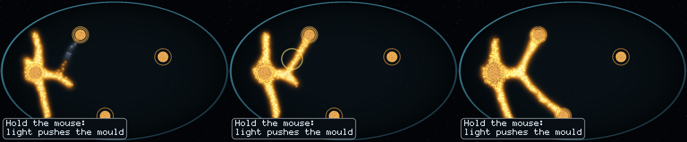
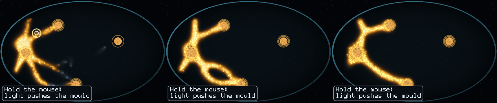

<title>GPU Arms Census</title>
<meta name="claude:viewport-fit-sides" content="cover">
<link rel="stylesheet" href="https://fonts.googleapis.com/css2?family=IBM+Plex+Sans:wght@400;500;600&family=IBM+Plex+Mono:wght@400;500&family=Space+Grotesk:wght@500;600&display=swap">
<style>
/* Layout: one reading column; pictures run full column width with their counts beside them. */
:root {
  --bg: #f4f6f5; --panel: #ffffff; --fg: #18211f; --muted: #56635f; --rule: #d5dcd9;
  --accent: #b86a12; --good: #2f7d4f; --bad: #b3372e;
  --display: "Space Grotesk", "IBM Plex Sans", system-ui, sans-serif;
  --body: "IBM Plex Sans", system-ui, -apple-system, sans-serif;
  --mono: "IBM Plex Mono", ui-monospace, Menlo, monospace;
}
@media (prefers-color-scheme: dark) { :root:not([data-theme="light"]) {
  --bg: #0d1413; --panel: #141d1b; --fg: #e3ebe8; --muted: #9aa9a4; --rule: #2a3633;
  --accent: #f0a34a; --good: #6fc896; --bad: #f08a80; color-scheme: dark } }
:root[data-theme="dark"] {
  --bg: #0d1413; --panel: #141d1b; --fg: #e3ebe8; --muted: #9aa9a4; --rule: #2a3633;
  --accent: #f0a34a; --good: #6fc896; --bad: #f08a80; color-scheme: dark }
body { background: var(--bg); color: var(--fg); font: 15px/1.55 var(--body); }
main { max-width: 980px; margin: 0 auto; padding-block: 32px 64px;
  padding-left: max(16px, env(safe-area-inset-left, 0px)); padding-right: max(16px, env(safe-area-inset-right, 0px));
  display: grid; gap: 36px; }
h1, h2 { font-family: var(--display); text-wrap: balance; margin: 0; line-height: 1.2; }
h1 { font-size: 1.9rem; }
h2 { font-size: 1.3rem; }
p { margin: 0; max-width: 68ch; }
.eyebrow { font: 500 0.75rem var(--mono); letter-spacing: 0.08em; text-transform: uppercase; color: var(--muted); }
section { display: grid; gap: 14px; min-width: 0; }
.verdict { display: inline-block; font: 600 0.8rem var(--mono); padding: 2px 8px; border-radius: 4px; border: 1px solid currentColor; }
.ok { color: var(--good); } .no { color: var(--bad); }
.scroll { overflow-x: auto; }
table { border-collapse: collapse; width: 100%; font-size: 0.9rem; font-variant-numeric: tabular-nums; }
th, td { text-align: left; padding: 8px 10px; border-bottom: 1px solid var(--rule); vertical-align: top; }
th { font: 500 0.75rem var(--mono); letter-spacing: 0.05em; text-transform: uppercase; color: var(--muted); }
td.num { font-family: var(--mono); white-space: nowrap; }
figure { margin: 0; display: grid; gap: 8px; }
figure img { width: 100%; border-radius: 6px; display: block; }
figcaption { font-size: 0.9rem; color: var(--muted); }
.pair { display: grid; gap: 18px; }
.counts { display: flex; flex-wrap: wrap; gap: 8px 22px; font: 0.85rem var(--mono); }
.counts b { color: var(--accent); font-weight: 500; }
.times { display: grid; grid-template-columns: repeat(3, 1fr); font: 0.75rem var(--mono); color: var(--muted); text-align: center; }
code { font-family: var(--mono); font-size: 0.88em; }
</style>

<main>
  <header style="display:grid;gap:10px">
    <div class="eyebrow">GPU plan · phase 1 · 2026-11-10</div>
    <h1>What the GPU's rules do to today's dishes</h1>
    <p>Three switches copy what a GPU would do differently from today's CPU dish. Each was run on every scored dish, 16 paired seeds, against today's rules, with idle, random and planned hands. With every switch off the dish is bit for bit main's.</p>
  </header>

  <section>
    <h2>The census</h2>
    <p>Ship bar: doing nothing 0 stars, random at most 1, the plan hand 3. "Survives" means a hand's own measure moved on a paired sign test that survives Bonferroni over 27 comparisons (p &lt; 0.0019).</p>
    <div class="scroll">
      <table>
        <thead><tr><th>Arm</th><th>What changes</th><th>Ship bar, seeds of 16<br>Wall / Ruler / Dry</th><th>Survives</th><th>Verdict</th></tr></thead>
        <tbody>
          <tr><td>today</td><td>the game</td><td class="num">15 / 16 / 15</td><td></td><td></td></tr>
          <tr><td>late</td><td>census 4 a second, landing two frames late</td><td class="num">15 / 15 / 15</td><td>none</td><td><span class="verdict ok">safe</span></td></tr>
          <tr><td>all at once</td><td>walkers sense before anyone moves; claims settle collisions; random draws keyed on seed, step, walker</td><td class="num">15 / 14 / 13</td><td>The Wild One, warden: 1-15, p 0.0005</td><td><span class="verdict no">fewer seam fights</span></td></tr>
          <tr><td>fixed point</td><td>trail, scent, positions and headings rounded to 1/65,536</td><td class="num">11 / 12 / 14</td><td>none on the measures, but random play wins the Wall on 5 seeds</td><td><span class="verdict no">changes play</span></td></tr>
          <tr><td>all three</td><td>as the GPU design runs</td><td class="num">15 / 15 / 15</td><td>The Wild One, warden: 0-16, p 0.00003</td><td><span class="verdict no">fewer seam fights</span></td></tr>
        </tbody>
      </table>
    </div>
  </section>

  <section>
    <h2>Floats carry a smell no one can see</h2>
    <p>Trail and scent fade a little each step and spread to their neighbours, so in floats they never quite reach zero. Walkers steer by gradients far below anything drawn. Rounded to 1/65,536, those cells read zero; a walker whose three sensors read the same goes straight on, so walkers that leave the network fly across the dish. Same dish, same seed, nobody playing:</p>
    <div class="pair">
      <figure>
        
        <div class="times"><span>1 s</span><span>2 s</span><span>4 s</span></div>
        <figcaption><b>Floats (today).</b></figcaption>
      </figure>
      <figure>
        
        <div class="times"><span>1 s</span><span>2 s</span><span>4 s</span></div>
        <figcaption><b>Fixed point.</b> The pale streaks at 1 s are strays flying straight across empty agar.</figcaption>
      </figure>
    </div>
    <div class="counts">
      <span>Behind the Wall, seed 8, 200 steps:</span>
      <span>agar cells with trail &gt;0 but &lt;1/65,536 in floats <b>15,247 of 29,899</b></span>
      <span>with such scent <b>14,021</b></span>
      <span>walkers unfed: floats <b>0</b>, fixed point <b>53</b></span>
      <span>random reaches the walled food: <b>5 of 16</b> seeds (0 today), at 0:02-0:03</span>
    </div>
    <p>More bits don't fix it: floats keep the smell down to about 10<sup>-38</sup>, roughly the dish's width. So the GPU keeps trail and scent as 32-bit floats. Whether an invisible smell should steer the mould at all is a design question; every dish is tuned on it today.</p>
  </section>

  <section>
    <h2>Moving all at once changes the fight</h2>
    <p>Where the two moulds meet on The Wild One, fewer walkers die: fights fall on 13 to 15 of 16 seeds for every hand. The warden's plan depends on those fights.</p>
    <div class="counts">
      <span>warden's share of the food, median: <b>0.648 → 0.594</b></span>
      <span>worse on <b>15 of 16</b> seeds</span>
      <span>stars <b>34 → 17</b></span>
      <span>seam losses, both sides, under the warden: <b>2,991 → 1,884</b></span>
      <span>with the old one-at-a-time lamp push put back: still worse on <b>13 of 16</b></span>
    </div>
    <p>A GPU has to move walkers at once, so this is how a GPU mould fights, which matters for an RTS. If more fighting is wanted, a second claim round lets walkers step into cells others left in the same pass; on a GPU that is one more pass. Today's dishes are unlikely to be the true games (owner, 20:55Z), so from here GPU changes are judged on engine measures on a neutral dish: network shape, spread speed, strays and seam fights.</p>
  </section>

  <section>
    <h2>Frame cost</h2>
    <p>Free dish, plan hand, seed 1, two runs, milliseconds of simulation a frame. The fixed-point arm's extra time is the emulation, not what integer code costs.</p>
    <div class="scroll">
      <table>
        <thead><tr><th>Arm</th><th>Simulation</th><th>Move</th><th>Census</th></tr></thead>
        <tbody>
          <tr><td>today</td><td class="num">1.08-1.09</td><td class="num">0.24-0.25</td><td class="num">0.048-0.050</td></tr>
          <tr><td>late</td><td class="num">1.05-1.08</td><td class="num">0.24-0.25</td><td class="num">0.012-0.013</td></tr>
          <tr><td>all at once</td><td class="num">1.10-1.13</td><td class="num">0.24-0.25</td><td class="num">0.049-0.051</td></tr>
          <tr><td>fixed point</td><td class="num">1.73</td><td class="num">0.47</td><td class="num">0.057-0.058</td></tr>
        </tbody>
      </table>
    </div>
    <p style="color:var(--muted);font-size:0.85rem">Source: <code>Reports/gpu-plan-2026-11-10.md</code>, phase 1 progress; raw runs in <code>Reports/gpu-plan-2026-11-10/census/</code>.</p>
  </section>
</main>
